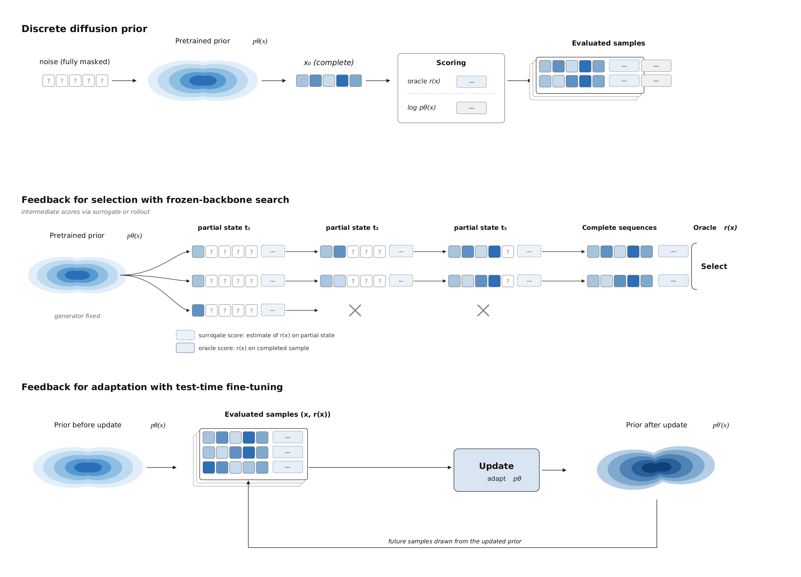
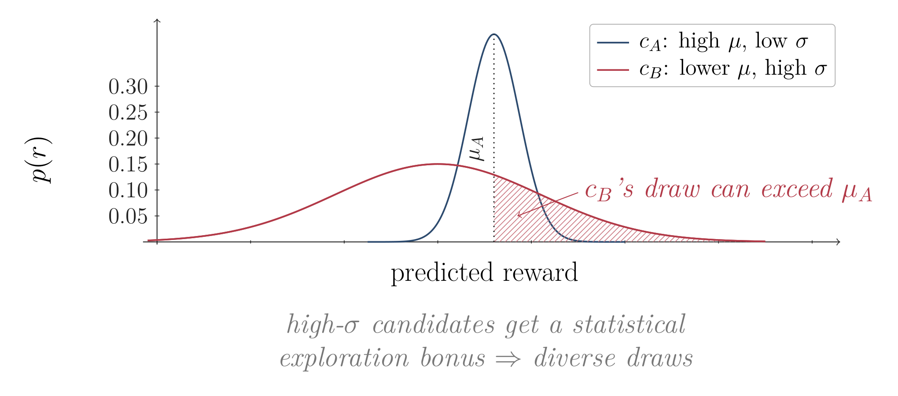
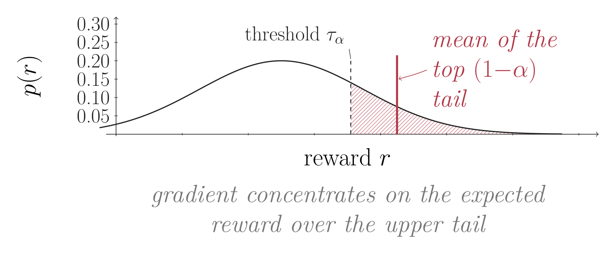

Steering Discrete Diffusion: Design Choices for Feedback-Efficient Molecular Optimization
Test-time compute is what you spend after training to move a model's output distribution toward the one your problem asks for.
Write the pretrained generator as $p_{\text{pre}}(x)$. Sampling from it gives you something that looks like its training data, which is rarely what anyone wants. A task also comes with a reward $r(x)$ saying how good a sample is for the job at hand. The reward differs for every job, so the distribution we want is never a property of the generator alone.
What we want is mass where the reward is high, without wandering off the chemistry the prior learned. Trading those two off gives the tilted target $p^\ast(x) \propto p_{\text{pre}}(x)\exp(r(x)/\beta)$. As $\beta$ shrinks it concentrates on the single best molecule, which is what a design campaign is after.
Every method in this post approximates $p^\ast$; they differ in where the approximation lives. Inference-time search leaves $p_{\text{pre}}$ untouched and works harder at sampling time to pull better draws out of it. Fine-tuning moves the generator itself, so the next round samples from something already closer to $p^\ast$.

Where the Budget Goes
There is a perfect algorithm for this. Sample from the prior forever, evaluate everything, keep the best. It is also unaffordable, because sampling and then evaluating are both expensive, and because the region we care about carries so little prior mass that we would draw an enormous number of samples before one landed there.
So test-time compute spends two things: oracle calls, and the compute the method itself burns on generation, fine-tuning, and surrogate updates. The exchange rate between them decides which strategy wins.
When the oracle is cheap, you do not need to be clever. Sample a lot, evaluate everything, keep the best. Code is the clean case: run it and see whether it compiles and passes its tests. Math is similar, with a proof checker. The answer is exact, instant, and repeatable, best-of-$N$ is hard to beat, and this is where most inference-time scaling results come from.
When the oracle dominates, sampling alone stops being viable. If measuring one candidate means running a binding assay against a specific target, you get a few hundred measurements, not a few million, and no amount of extra sampling manufactures more.

That second regime is the one we work in. It is also the one where the least is settled.
The Setting: a Broad Prior and an Expensive Oracle
We are generating molecules. Our prior is a discrete diffusion model trained on a few hundred million drug-like SMILES, so it knows valence rules, ring systems, and roughly what medicinal chemistry looks like. Our reward is how well a molecule binds one particular protein. The molecules that bind well are a tiny corner of everything the prior knows how to draw.
That reward is what makes the setting hard. It is scalar and terminal: one number, available only once a complete molecule exists, with no partial credit for a half-built one. It is a black box we cannot differentiate through, so no gradient points toward a better molecule. And it is expensive, by an amount that depends on how seriously we ask. A learned affinity model answers in milliseconds, a structure-prediction run takes seconds to minutes, and a wet-lab assay takes weeks and real money. The further down that ladder we go, the more each call has to earn its place.
Where the Feedback Goes
So we want a search that is efficient and that scales. The first thing to settle is where the feedback goes. It can steer selection, picking better draws out of a generator that never changes, or it can go into the generator itself, so that every later round samples from something better.

We spend the budget on updating the generator. A search decision is spent the moment it is made, while a gradient step compounds into every round that follows.
That still leaves four decisions on every round: which candidates earn an oracle call, how their scores become a training signal, how far to push off the pretrained prior, and what stops the whole thing from collapsing onto a handful of modes or off the valid manifold. There are reasonable options for each, and the literature covers them one at a time. What nobody had established is which option is best in a real loop, or whether they can be used together at all. So we ran that experiment.
Approach: Four Decisions and Their Alternatives
1. Which Candidates Earn an Oracle Call
The options are to evaluate whatever a surrogate model scores highest, allocate at random, use a UCB-style rule, or sample from the surrogate's uncertainty.
Start with how limited the surrogate is. Trained on a few thousand oracle-scored points, it predicts well near candidates it has already seen and badly everywhere else. Greedy acquisition keeps sending it the candidates it is already confident about, which is the one thing we learn nothing from. We would rather spend a call where the surrogate does not yet know the answer.
We use Thompson sampling instead (Thompson, 1933). Our surrogate is an ensemble of ten small MLPs, which gives each candidate a mean prediction $\mu_i$ and a disagreement $\sigma_i$. Rather than ranking by $\mu_i$, we draw one sample per candidate, $\hat r_i = \mu_i + \varepsilon_i\sigma_i$ with $\varepsilon_i$ standard normal, and send the top $K$ to the oracle. A candidate the ensemble disagrees about gets a wide draw and can outrank a confidently-mediocre one; where the ensemble agrees, $\sigma_i$ is small and the rule collapses back to greedy. Exploration is proportional to ignorance rather than fixed in advance. Random allocation and a UCB-style rule also steer calls away from the greedy argmax, and Thompson came out ahead of both on high-reward tail performance, so the gain is not simply that it explores more.

2. Which Rewards Drive the Update
The options are to optimize expected reward, hard-filter to the top-k and train on those, or shape the reward distribution.
The usual thing is to maximize expected reward, and here that optimizes the wrong statistic. We want the single best molecule, not a better average one, and the two come apart. Hard top-k filtering fixes the target but throws away the gradient everywhere else.
We use a CVaR objective instead (Rockafellar & Uryasev, 2000; De Santi et al., 2025). CVaR at level $1-\tau$ is the mean reward conditional on being above the $\tau$-quantile: the average of the top slice rather than of everything. In the loop it is one line. Take the running $\tau$-quantile $Q_\tau$ of rewards seen so far and replace each raw reward $r$ with $(r - Q_\tau)_+/(1-\tau)$. Rewards below the quantile contribute nothing to the gradient, and those above are scaled up. We set $\tau = 0.8$, so the best fifth of what the oracle has scored drives the update. Average sample quality gets worse, which is fine, because we are not shipping the average.

3. How Far to Move Off the Prior
A KL penalty to the prior is the standard move in reward fine-tuning, but it pulls the wrong way, keeping the generator near a prior we are explicitly trying to leave. An entropy bonus adds spread without caring where the spread goes.
Upper-tail shaping has its own failure mode, which is collapse. Concentrating the gradient on high-reward samples pushes the generator to produce more of what already scores well, so it narrows onto a few modes it has already found and stops looking anywhere else. Nothing in the objective distinguishes a high-reward region the generator samples constantly from one it has barely visited.
Density entropy regularization fixes that by subtracting the generator's own log-likelihood from the log-reward (De Santi et al., 2025), giving $\log r(x) - \gamma \log p_{\theta}(x)$. A candidate the model already assigns high probability to is discounted in proportion to how well it is covered, so the modes the policy occupies stop absorbing gradient and smaller ones get lifted. Because the term is defined on the model's own density, it drops into the diffusion objective instead of sitting beside it as a separate penalty.

4. What Keeps It From Breaking
Pushing the generator off its prior is the whole point of the first three decisions, and it breaks two things on the way.
A purely on-policy update trains only on the most recent batch, so a good molecule found early stops mattering once the sampling distribution moves on. A replay buffer with priority eviction and stratified sampling keeps it in the mix (Mnih et al., 2015).
More seriously, exploration will leave the valid molecular manifold. The options here are a token-level mask during decoding or a penalty applied after the fact. We use the penalty, because invalidity here usually appears only after full decoding, at RDKit parsing or conformer generation, rather than as a locally invalid token transition a mask could catch. Without it, validity collapses within the first hour as the model piles mass onto out-of-distribution strings with high surrogate reward. That collapse is driven primarily by the density term: the same mechanism that buys exploration is what pushes generation off-manifold. The two only make sense as a pair.

Results
We ran nine tasks. Six are small-molecule binding targets, named for the structures they come from: 2VT4, 5SDV, 6CM4, 7BKC, 7C7M, and 7YLL, each scored by a learned affinity model. The other three are protein fitness tasks, one per family: GB1, CreiLOV, and TrpB, each with its own generator and its own fitness predictor. Every cell runs five seeds.
The aggregate numbers below average over the six molecular targets, and the trajectory plots show one of them, 7C7M, so the individual curves stay readable. The protein tasks are the quiet half of the story. The same ablations barely move them, which turns out to be the most informative result in the set.
Every Component Earns Its Place
Every comparison below holds the oracle budget fixed, so these are differences in what a method gets for the same number of calls.
No component is redundant. Removing any single one from the full loop costs reward. Density entropy regularization is the largest single contributor under DDPP-LB: at 5,000 oracle calls the full loop reaches roughly 0.97 normalized reward, and about 0.58 without it.
But They Are Not Independent
A full factorial over density entropy regularization, CVaR, and Thompson sampling shows that two of them only pay off once the third is on. Starting from everything off, turning on CVaR alone moves the mean best score from −1.06 to −0.86, and Thompson alone to −0.80. Density entropy regularization alone reaches −0.43, and from there adding the other two gets to +1.13. Density entropy regularization opens off-prior headroom; CVaR and Thompson exploit it. Neither half is worth much without the other.

The factorial measures a single budget. Removing components in combination and watching the whole trajectory shows the same pattern, and shows when it starts: the cells are indistinguishable for the first hundred calls or so, because nothing has moved off the prior yet. The gaps open only once adaptation has somewhere to go.

Why the Protein Tasks Barely Move
On GB1, CreiLOV, and TrpB the same ablations are close to flat, and that is the clearest evidence we have for the mechanism above. Those generators are trained per family, so a high-fitness variant is already something the prior samples readily. There is no off-prior headroom for density entropy regularization to open, and with nothing opened, the components that depend on it have nothing to exploit.
That gives a rough rule for deciding whether any of this is worth your compute, before you spend it. Ask how far the thing you want sits from what your generator already produces. If it is already in distribution, sample and select, because the machinery here will not buy you much. The further off-prior it sits, the more these components return.
Adapting Beats Searching
We compared against five inference-time search baselines that steer a frozen generator: best-of-N, beam search, MCTS, discrete Feynman-Kac correctors, and SMC. Averaged over six small-molecule targets, the assembled loop reaches the best baseline's final score in roughly 58x fewer oracle calls. That is a statement about budget rather than ceiling, and it is measured against a learned affinity oracle. When a call is a structure-prediction run instead of a fast surrogate, that ratio decides whether a campaign is tractable at all.

What We Would Fix Next
The obvious next step is wet-lab validation. Everything here optimizes against a computational oracle, so what carries over is a claim about feedback efficiency, not about molecules that have been made and measured. The rest is refinement. Each of these four components is a reasonable choice rather than a settled one.
Conclusion
The headline number is feedback efficiency. Averaged over the six small-molecule targets, the full loop matches the best search baseline's final score in about 58x fewer oracle calls. That is a budget result and not a ceiling result: run both long enough and search gets there too. It matters because nobody runs them long enough. When one call is a structure-prediction run or a wet-lab assay, the budget is set before the project starts, and the only thing that matters is how far you get inside it.
We expected one of the four components to be the one that mattered, and we were going to tell you to use that one. That is not what happened. Density entropy regularization turned out to be a precondition rather than a contributor. With it switched off, adding CVaR moves the score from -1.06 to -0.86 and adding Thompson moves it to -0.80, which is close to nothing. With it switched on, those same two components take -0.43 to +1.13. We did not predict that, and we would not have found it the way we were originally looking: a leave-one-out table, which is what most papers report and what our own first pass reported, cannot see an interaction like this at all.
So, three things worth taking to the next problem. Check first how far what you want sits from what your generator already samples, because if it is already in distribution you should sample and select and skip everything here. If it is not, spend your effort on the density term before anything else, since the other components are waiting on it. And measure interactions rather than ablations, because a leave-one-out table would have told us CVaR and Thompson were marginal, and they are not.
For the full set of results, ablations, and analysis, see our arXiv preprint and the code.
Acknowledgments
This work was primarily conducted by researchers at Caltech, supported in part by NSF #2505096 and gifts from Genesis Therapeutics, Point72, and OpenAI. Jason Yang was supported in part by a Google Fellowship. Riccardo De Santi was supported by an ETH AI Center doctoral fellowship and the Swiss National Science Foundation under NCCR Catalysis and NCCR Automation.
Trevor Chen*, Ariel Dai*, Jason Yang, Riccardo De Santi, Daniel Khalil, Wenda Chu, Nate Gruver, Pranav Murugan, Alexander F. G. Goldberg, Maruan Al-Shedivat, Yisong Yue. (*equal contribution.) Caltech, ETH Zurich, Genesis Molecular AI.